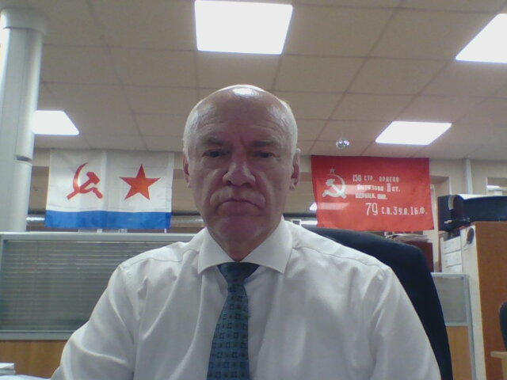
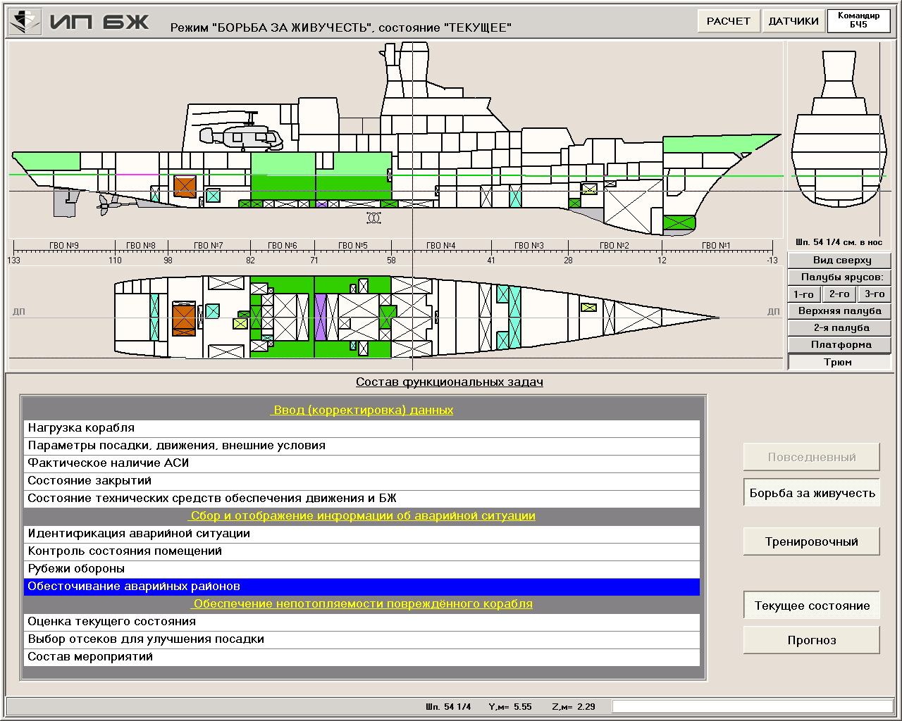
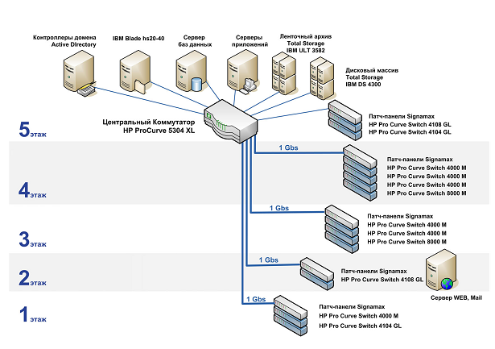
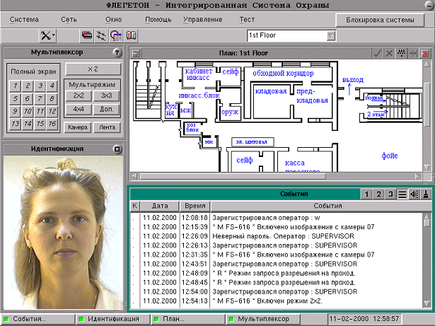
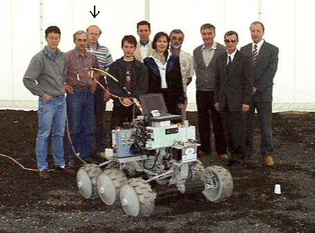
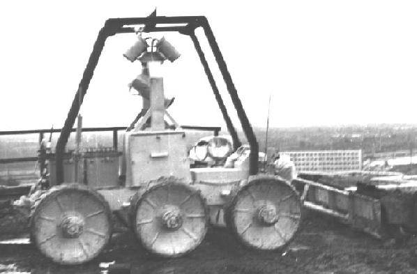
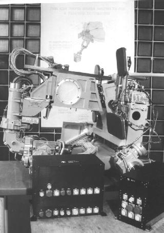
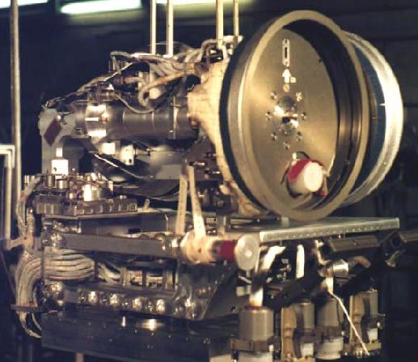
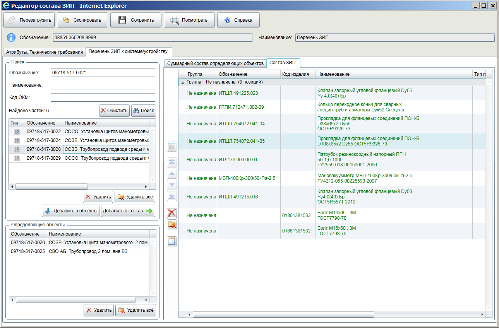
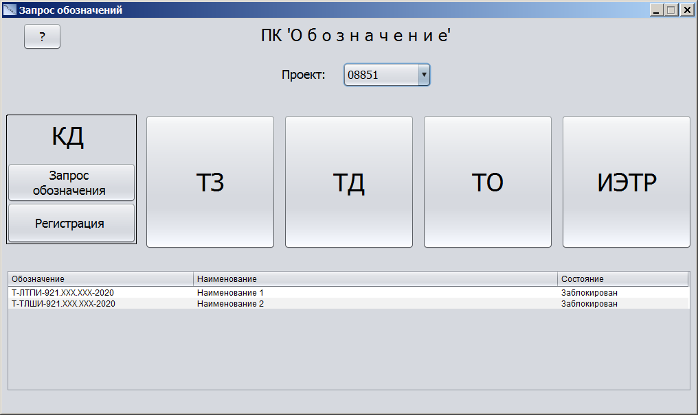

Дело жизни лежит на пересечении наших талантов и потребностей мира

Для большого стерегущего корабля. Как это делалось и чем закончилось, возможно, речь впереди.

Мне удалось найти решение в 2000 г. по оптимальной структуре ЛВС для этой организации. Функционирует по сей день без качественных изменений, хотя был построен и подключен ещё один новый этаж.

Многофункциональная система, включающая пожарную систему, систему видеонаблюдения, систему контроля и назначения доступа. Функционирует под ОС QNX.

Макет изготовлен в рамках проекта Евролуна. Шасси включает 17 приводов для движения и изменения конфигурации конструктива, а также стабилизации положения в пространстве научного блока.

Говорят, что этот робот, спроектированый и изготовленный во ВНИИТрансМаш, проработал дольше аналогичных аппаратов, в том числе иностранных, в радиоционный зоне.

Грустная судьба - ракета-носитель после запуска упала в Индийский океан у острова Пасхи вместе с полезным грузом.

Ещё обна грустная судьба - после монтажа на корпусе станции грузовик грохнул по корпусу станции. По отсеку, где была смонтирована платформа.

-------------------------------------------------------------------------

Программная система выполнена по технологии "клиент-сервер". Пользователь формирует запрос с шаблоном обозначения и через некоторое время получает полное обозначение.